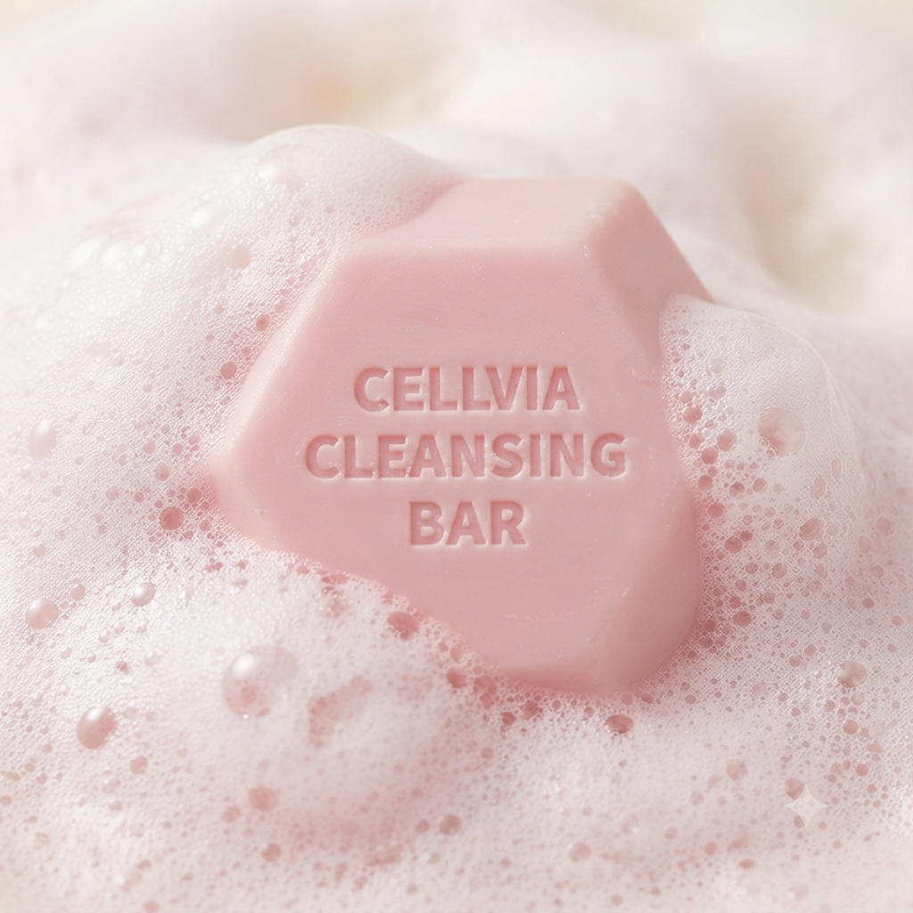

毎日うるおい肌を保つ秘訣。
素肌をやさしく包み込む
クレンジングバー
もこもこ立ち上がる濃密な生クリーム泡が、毛穴の汚れや古い角質をすっきりオフ。 ヒト幹細胞順化培養液(10,000ppm)と厳選された保湿・整肌成分が、洗顔後のつっぱり感を防ぎます。
CELLVIA
Cleansing Bar

標準重量
85g (水分込100g)
セルビア クレンジングバー 6つのこだわり
高密度のココナッツベース
厳選されたココナッツ由来の洗浄成分ベースを採用。肌に負担をかけることなく汚れをやさしく洗い流します。
ふやけにくく最後まで
水分に強く溶け崩れしにくい硬度設計。最後まで型崩れせず、衛生的に気持ちよくお使いいただけます。
もちもち濃密な生クリーム泡
キメ細かく弾力のある泡が立ち上がり、摩擦による手肌への負担を抑えてやさしく洗顔できます。
つっぱりにくい保湿感
洗浄後のお肌に必要なうるおいを残し、つっぱり感のないしっとりとなめらかな肌触りをキープします。
古い角質＆毛穴汚れをオフ
お肌の古い角質や毛穴につまった余分な皮脂汚れを、濃密泡が吸着してすっきりとクレンジングします。
顔から全身までトータルケア
顔のスキンケアはもちろん、背中やデコルテなど乾燥が気になる全身のボディソープとしても最適です。
厳選された主要成分
各成分をタップして詳細をご確認ください
理想のすっきり感とうるおい保持
水分補給・泡の密度・型崩れ防止・マイルドさ・キメ整頓の5つの指標で洗顔体験をトータルサポート。
HOW TO USE
濡らした手やネットで、しっかりともこもこの泡を立てます。
顔やボディに、クッション泡でやさしく包み込むようにマッサージ。
泡が残らないよう、ぬるま湯で丁寧にしっかり洗い流します。